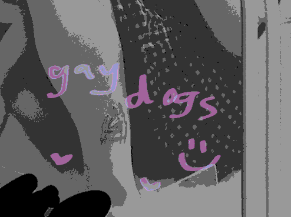

this is unfortunately real
Poetic websites immerse you and make you feel things. Poetic websites break norms and boundaries, using all the affordances of their host or none. Poetic websites might make you feel nothing. They are different from the disconnected, utilitarian web today.
Many definitions associated with world-building, but mostly about paracosm development (as expression) or the active application of speculative concepts (always seeking utility) to frame new, radical truths and concepts. Challenging reality by creating new narratives that don't fit in with existing, broken hegemony—through the creation of institutions, religions, and universes.
I want to make creation ubiquituous. Developing tooling, platforms, and spaces that enable people to convene and create for what they need most is my dream; in creation I found expression, utility, and the way I view the world. I'm most interested in design (also multimedia editors) and development (primarily IDEs) tooling at the moment, but want to branch out into designing the more 'mundane' invisible experiences that surround you—or hyperspecific tools for niche use cases as one-off web projects.
And all the human sounds that come with it
soon the sun will depart later & i will join the new haven bird club field trips & see all the spring migrants, feeling a little more connected to all they've flown over.. and i will wonder what else you do when you know you're living in a place for the last time in your life
thought i had to be glorious when all i needed to be was present
Chia is an internet artist that believes in the poetic potential of the web, words, worlding, and sometimes themselves. More?